Binarization
Last modified: May 17, 2022
Contents
- RegionInformation
- abutaleb_threshold
- bernsen_threshold
- brink_threshold
- djvu_threshold
- gatos_threshold
- niblack_threshold
- otsu_find_threshold
- otsu_threshold
- sauvola_threshold
- shading_subtraction
- soft_threshold
- soft_threshold_find_sigma
- threshold
- tsai_moment_preserving_find_threshold
- tsai_moment_preserving_threshold
- white_rohrer_threshold
RegionInformation
gatos_background
Image [GreyScale] gatos_background (Image [OneBit] binarization, int region size = 15)
| Operates on: | Image [GreyScale] |
|---|---|
| Returns: | Image [GreyScale] |
| Category: | Binarization/RegionInformation |
| Defined in: | binarization.py |
| Author: | John Ashley Burgoyne and Ichiro Fujinaga |
Estimates the background of an image according to Gatos et al.'s method. See:
Gatos, Basilios, Ioannis Pratikakis, and Stavros J. Perantonis. 2004. An adaptive binarization technique for low quality historical documents. Lecture Notes in Computer Science 3163: 102--113.
- region_size
- Region size for interpolation.
- binarization
- A preliminary binarization of the image.
image_mean
float image_mean ()
| Operates on: | Image [GreyScale|Grey16|Float] |
|---|---|
| Returns: | float |
| Category: | Binarization/RegionInformation |
| Defined in: | binarization.py |
| Author: | John Ashley Burgoyne and Ichiro Fujinaga |
Returns the mean over all pixels of an image as a FLOAT.
image_variance
float image_variance ()
| Operates on: | Image [GreyScale|Grey16|Float] |
|---|---|
| Returns: | float |
| Category: | Binarization/RegionInformation |
| Defined in: | binarization.py |
| Author: | John Ashley Burgoyne and Ichiro Fujinaga |
Returns the variance over all pixels of an image as a FLOAT.
mean_filter
Image [Float] mean_filter (int region size = 5)
| Operates on: | Image [GreyScale|Grey16|Float] |
|---|---|
| Returns: | Image [Float] |
| Category: | Binarization/RegionInformation |
| Defined in: | binarization.py |
| Author: | John Ashley Burgoyne and Ichiro Fujinaga |
Returns the regional mean of an image as a FLOAT.
- region_size
- The size of the region in which to calculate a mean.
Example 1: mean_filter()
 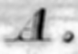
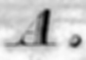
Example 2: mean_filter()
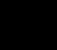 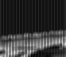Example 3: mean_filter()

variance_filter
Image [Float] variance_filter (Image [Float] means, int region size = 5)
| Operates on: | Image [GreyScale|Grey16|Float] |
|---|---|
| Returns: | Image [Float] |
| Category: | Binarization/RegionInformation |
| Defined in: | binarization.py |
| Author: | John Ashley Burgoyne and Ichiro Fujinaga |
Returns the regional variance of an image as a FLOAT.
- means
- Pre-calculated means for each region.
- region_size
- The size of the region in which to calculate the variance.
abutaleb_threshold
Image [OneBit] abutaleb_threshold (Choice [dense|rle] storage format)
| Operates on: | Image [GreyScale] |
|---|---|
| Returns: | Image [OneBit] |
| Category: | Binarization |
| Defined in: | threshold.py |
| Author: | Michael Droettboom and Karl MacMillan |
Creates a binary image by using the Abutaleb locally-adaptive thresholding algorithm.
- storage_format (optional)
specifies the compression type for the result:
- DENSE (0)
- no compression
- RLE (1)
- run-length encoding compression
Example 1: abutaleb_threshold()
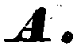
bernsen_threshold
Image [OneBit] bernsen_threshold (Choice [dense|rle] storage format, int(1, 50) region size = 11, int(0, 255) contrast limit = 80, bool doubt_to_black = False)
| Operates on: | Image [GreyScale] |
|---|---|
| Returns: | Image [OneBit] |
| Category: | Binarization |
| Defined in: | threshold.py |
| Author: | Michael Droettboom and Karl MacMillan |
Creates a binary image by using the Bernsen algorithm.
Each point is thresholded by the mean between the maximum and minimum value in the surrounding region of size region_size. When the difference between maximum and minimum is below contrast_limit the pixel is set to black in case of doubt_to_black = True, otherwise to white.
Reference: J. Bernsen: Dynamic thresholding of grey-level images. Proc. 8th International Conference on Pattern Recognition (ICPR8), pp. 1251-1255, 1986.
- storage_format
specifies the compression type for the result:
- DENSE (0)
- no compression
- RLE (1)
- run-length encoding compression
- region_size
- The size of each region in which to calculate a threshold
- contrast_limit
- The minimum amount of contrast required to threshold.
- doubt_to_black
- When True, 'doubtful' values are set to black, otherwise to white.
Example 1: bernsen_threshold()
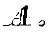
brink_threshold
Image [OneBit] brink_threshold ()
| Operates on: | Image [GreyScale] |
|---|---|
| Returns: | Image [OneBit] |
| Category: | Binarization |
| Defined in: | binarization.py |
| Author: | Johanna Devaney, Brian Stern |
Calculates threshold for image with Brink and Pendock's minimum-cross entropy method and returns corrected image. It is best used for binarising images with dark, near-black foreground and significant bleed-through. To that end, it generally predicts lower thresholds than other thresholding algorithms.
Reference: A.D. Brink, N.E. Pendock: Minimum cross-entropy threshold selection. Pattern Recognition 29 (1), 1996. 179-188.
Example 1: brink_threshold()
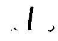
djvu_threshold
Image [OneBit] djvu_threshold (float(0.00, 1.00) smoothness = 0.20, int max_block_size = 512, int min_block_size = 64, int(1, 8) block_factor = 2)
| Operates on: | Image [RGB] |
|---|---|
| Returns: | Image [OneBit] |
| Category: | Binarization |
| Defined in: | threshold.py |
| Author: | Michael Droettboom and Karl MacMillan |
Creates a binary image by using the DjVu thresholding algorithm.
See Section 5.1 in:
Bottou, L., P. Haffner, P. G. Howard, P. Simard, Y. Bengio and Y. LeCun. 1998. High Quality Document Image Compression with DjVu. AT&T Labs, Lincroft, NJ.
This implementation features an additional extension to the algorithm described above. Once the background and foreground colors are determined for each block, the image is thresholded by interpolating the foreground and background colors between the blocks. This prevents "blockiness" along boundaries of strong color change.
- smoothness
- The amount of effect that parent blocks have on their children blocks. Higher values will result in more smoothness between blocks. Expressed as a percentage between 0.0 and 1.0.
- max_block_size
- The size of the largest block to determine a threshold.
- min_block_size
- The size of the smallest block to determine a threshold.
- block_factor
- The number of child blocks (in each direction) per parent block. For instance, a block_factor of 2 results in 4 children per parent.
Example 1: djvu_threshold(0.5, 512, 64, 2)

gatos_threshold
Image [OneBit] gatos_threshold (Image [GreyScale] background, Image [OneBit] binarization, float q = 0.60, float p1 = 0.50, float p2 = 0.80)
| Operates on: | Image [GreyScale] |
|---|---|
| Returns: | Image [OneBit] |
| Category: | Binarization |
| Defined in: | binarization.py |
| Author: | John Ashley Burgoyne and Ichiro Fujinaga |
Thresholds an image according to Gatos et al.'s method. See:
Gatos, Basilios, Ioannis Pratikakis, and Stavros J. Perantonis. 2004. An adaptive binarization technique for low quality historical documents. Lecture Notes in Computer Science 3163: 102-113.
- background
- Estimated background of the image.
- binarization
- A preliminary binarization of the image.
Use the default settings for the other parameters unless you know what you are doing.
niblack_threshold
Image [OneBit] niblack_threshold (int region size = 15, float sensitivity = -0.20, int(0, 255) lower bound = 20, int(0, 255) upper bound = 150)
| Operates on: | Image [GreyScale] |
|---|---|
| Returns: | Image [OneBit] |
| Category: | Binarization |
| Defined in: | binarization.py |
| Author: | John Ashley Burgoyne and Ichiro Fujinaga |
Creates a binary image using Niblack's adaptive algorithm.
Niblack, W. 1986. An Introduction to Digital Image Processing. Englewood Cliffs, NJ: Prentice Hall.
Like the QGAR library, there are two extra global thresholds for the lightest and darkest regions.
- region_size
- The size of the region in which to calculate a threshold.
- sensitivity
- The sensitivity weight on the variance.
- lower bound
- A global threshold beneath which all pixels are considered black.
- upper bound
- A global threshold above which all pixels are considered white.
Example 1: niblack_threshold()
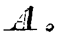
otsu_find_threshold
int otsu_find_threshold ()
| Operates on: | Image [GreyScale] |
|---|---|
| Returns: | int |
| Category: | Binarization |
| Defined in: | threshold.py |
| Author: | Michael Droettboom and Karl MacMillan |
Finds a threshold point using the Otsu algorithm. Reference:
N. Otsu: A Threshold Selection Method from Grey-Level Histograms. IEEE Transactions on Systems, Man, and Cybernetics (9), pp. 62-66 (1979)
Example 1: otsu_find_threshold()
result = 143
otsu_threshold
Image [OneBit] otsu_threshold (Choice [dense|rle] storage format)
| Operates on: | Image [GreyScale] |
|---|---|
| Returns: | Image [OneBit] |
| Category: | Binarization |
| Defined in: | threshold.py |
| Author: | Michael Droettboom and Karl MacMillan |
Creates a binary image by splitting along a threshold value determined using the Otsu algorithm.
Equivalent to image.threshold(image.otsu_find_threshold()).
- storage_format (optional)
specifies the compression type for the result:
- DENSE (0)
- no compression
- RLE (1)
- run-length encoding compression
Example 1: otsu_threshold()

sauvola_threshold
Image [OneBit] sauvola_threshold (int region size = 15, float sensitivity = 0.50, int(1, 255) dynamic range = 128, int(0, 255) lower bound = 20, int(0, 255) upper bound = 150)
| Operates on: | Image [GreyScale] |
|---|---|
| Returns: | Image [OneBit] |
| Category: | Binarization |
| Defined in: | binarization.py |
| Author: | John Ashley Burgoyne and Ichiro Fujinaga |
Creates a binary image using Sauvola's adaptive algorithm.
Sauvola, J. and M. Pietikainen. 2000. Adaptive document image binarization. Pattern Recognition 33: 225--236.
Like the QGAR library, there are two extra global thresholds for the lightest and darkest regions.
- region_size
- The size of the region in which to calculate a threshold.
- sensitivity
- The sensitivity weight on the adjusted variance.
- dynamic_range
- The dynamic range of the variance.
- lower bound
- A global threshold beneath which all pixels are considered black.
- upper bound
- A global threshold above which all pixels are considered white.
Example 1: sauvola_threshold()
shading_subtraction
Image [OneBit] shading_subtraction (int k = 7, int threshold = None)
| Operates on: | Image [GreyScale] |
|---|---|
| Returns: | Image [OneBit] |
| Category: | Binarization |
| Defined in: | binarization.py |
| Author: | Christoph Dalitz |
Thresholds an image after subtracting a -possibly shaded- background.
First the background image is extracted with a maximum filter with a k*k window, and this image is subtracted from the original image. On the difference image, a threshold is applied, and the inverted image thereof is the binarization result.
Parameters:
- k
- Window size of the maximum filter. Must be odd. For decent results, it must be chosen so large that every window includes at least one background pixel.
- threshold
- Threshold applied to the difference image. A possibly reasonable value might lie around 20. When None, the threshold is determined automatically with otsu_find_threshold.
Reference: K.D. Toennies: Grundlagen der Bildverarbeitung. Pearson Studium, 2005, p.202
Example 1: shading_subtraction()
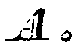
soft_threshold
Image [GreyScale] soft_threshold (int t = None, float sigma = 0.00, Choice [logistic|normal|uniform] dist = logistic)
| Operates on: | Image [GreyScale] |
|---|---|
| Returns: | Image [GreyScale] |
| Category: | Binarization |
| Defined in: | threshold.py |
| Author: | Christoph Dalitz |
Does a greyscale transformation that "smears out" the threshold t by a choosable amount sigma. This has the effect of a "soft" thresholding.
Each grey value x is transformed to F(x,t,sigma), where F is the CDF probability distribution with mean t and variance sigma^2. The parameter dist determines the type of probability distribution: 0 = logistic, 1 = normal (gaussian), 2 = uniform.
As the choice sigma = 0 is useless (it is the same as normal thresholding), this special value is reserved for an automatic selection of sigma with soft_threshold_find_sigma.
When t is not given, it is automatically computed with otsu_find_threshold.
Reference: C. Dalitz: "Soft Thresholding for Visual Image Enhancement." Technischer Bericht Nr. 2014-01, Hochschule Niederrhein, Fachbereich Elektrotechnik und Informatik, 2014
Example 1: soft_threshold(128, 25)
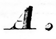
soft_threshold_find_sigma
float soft_threshold_find_sigma (int t = None, Choice [logistic|normal|uniform] dist = logistic)
| Operates on: | Image [GreyScale] |
|---|---|
| Returns: | float |
| Category: | Binarization |
| Defined in: | threshold.py |
| Author: | Christoph Dalitz |
For the CDF probability distribution given by dist (0 = logistic, 1 = normal (gaussian), 2 = uniform), sigma is determined such that F(m,t,sigma) = 0.99, where m is the mean grey value of all pixels with a grey value greater than t.
Reference: C. Dalitz: "Soft Thresholding for Visual Image Enhancement." Technischer Bericht Nr. 2014-01, Hochschule Niederrhein, Fachbereich Elektrotechnik und Informatik, 2014
threshold
Image [OneBit] threshold (int threshold, Choice [dense|rle] storage format)
| Operates on: | Image [GreyScale|Grey16|Float] |
|---|---|
| Returns: | Image [OneBit] |
| Category: | Binarization |
| Defined in: | threshold.py |
| Author: | Michael Droettboom and Karl MacMillan |
Creates a binary image by splitting along a given global threshold value.
Pixels that are greater than the given value become white. Pixels less than or equal to the given value become black.
- storage_format (optional)
specifies the compression type for the result:
- DENSE (0)
- no compression
- RLE (1)
- run-length encoding compression.
Example 1: threshold(128)
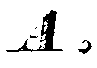
tsai_moment_preserving_find_threshold
int tsai_moment_preserving_find_threshold ()
| Operates on: | Image [GreyScale] |
|---|---|
| Returns: | int |
| Category: | Binarization |
| Defined in: | threshold.py |
| Author: | Uma Kompella |
Finds a threshold point using the Tsai Moment Preserving threshold algorithm. Reference:
W.H. Tsai: Moment-Preserving Thresholding: A New Approach. Computer Vision Graphics and Image Processing (29), pp. 377-393 (1985)
Example 1: tsai_moment_preserving_find_threshold()
result = 153
tsai_moment_preserving_threshold
Image [OneBit] tsai_moment_preserving_threshold (Choice [dense|rle] storage format)
| Operates on: | Image [GreyScale] |
|---|---|
| Returns: | Image [OneBit] |
| Category: | Binarization |
| Defined in: | threshold.py |
| Author: | Uma Kompella |
Creates a binary image by splitting along a threshold value determined using the Tsai Moment Preserving Threshold algorithm.
Equivalent to image.threshold(image.tsai_moment_preserving_find_threshold()).
- storage_format (optional)
specifies the compression type for the result:
- DENSE (0)
- no compression
- RLE (1)
- run-length encoding compression
Example 1: tsai_moment_preserving_threshold()
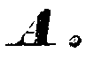
white_rohrer_threshold
Image [OneBit] white_rohrer_threshold (int x lookahead = 8, int y lookahead = 1, int bias mode = 0, int bias factor = 100, int f factor = 100, int g factor = 100)
| Operates on: | Image [GreyScale] |
|---|---|
| Returns: | Image [OneBit] |
| Category: | Binarization |
| Defined in: | binarization.py |
| Author: | Uma Kompella (using code from the XITE library) |
Creates a binary image using White and Rohrer's dynamic thresholding algorithm. It is the first of the two algorithms described in:
J. M. White and G. D. Rohrer. 1983. Image thresholding for optical character recognition and other applications requiring character image extraction. IBM J. Res. Dev. 27(4), pp. 400-411
The algorithm uses a 'running' average instead of true average of the gray values in the neighborhood. The lookahead parameter gives the number of lookahead pixels used in the biased running average that is used in deciding the threshold at each pixel location.
- x_lookahead
- the number of lookahead pixels in the horizontal direction for computing the running average. White and Rohrer suggest a value of 8 for a 240 dpi scanning resolution.
- y_lookahead
- number of lines used for further averaging from the horizontal averages.
The other parameters are for calculating biased running average. Without bias the thresholding decision would be determined by noise fluctuations in uniform areas.
This implementation uses code from XITE.
Note
Permission to use, copy, modify and distribute this software and its documentation for any purpose and without fee is hereby granted, provided that this copyright notice appear in all copies and that both that copyright notice and this permission notice appear in supporting documentation and that the name of B-lab, Department of Informatics or University of Oslo not be used in advertising or publicity pertaining to distribution of the software without specific, written prior permission.
B-LAB DISCLAIMS ALL WARRANTIES WITH REGARD TO THIS SOFTWARE, INCLUDING ALL IMPLIED WARRANTIES OF MERCHANTABILITY AND FITNESS, IN NO EVENT SHALL B-LAB BE LIABLE FOR ANY SPECIAL, INDIRECT OR CONSEQUENTIAL DAMAGES OR ANY DAMAGES WHATSOEVER RESULTING FROM LOSS OF USE, DATA OR PROFITS, WHETHER IN AN ACTION OF CONTRACT, NEGLIGENCE OR OTHER TORTIOUS ACTION, ARISING OUT OF OR IN CONNECTION WITH THE USE OR PERFORMANCE OF THIS SOFTWARE.
Example 1: white_rohrer_threshold()
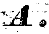